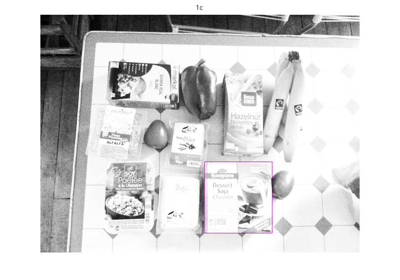

clear
img1 = imread('soy-dessert.jpg');
img2 = imread('vegan-modified.jpg');
img1 = imresize(img1,0.5);
img2 = imresize(img2,0.5);
[l1 b1] = size(img1);
[l2 b2] = size(img2);
template_std = std(double(img1(:)));
template_kernel = double( double(img1(:)) - repmat ( mean(img1(:)) ,l1*b1,1 ) )/template_std/prod(size(img1)) ;
normalized_co_diff = @(x) double ( sum ( ( double(x(:)) - repmat ( mean(x(:)) ,l1*b1 ,1) ) ...
.* ( template_kernel ) ) )...
/ std (double(x(:)));
temp=zeros(l2-l1,b2-b1);
tic;
for i=1:l2-l1
for j=1:b2-b1
temp(i,j)=normalized_co_diff( img2 ( i : i+l1-1 , j : j+b1-1 ) );
end
end
toc;
[max_val max_index]=max(temp(:));
[r c] = ind2sub(size(temp),max_index);
img_final(:,:,1) = img2;
img_final(:,:,2) = img2;
img_final(:,:,3) = img2;
img_final( r , c:c+b1 ,2) = 255*zeros(1,b1+1);
img_final( r+l1 , c:c+b1 ,2) = 255*zeros(1,b1+1);
img_final( r:r+l1, c ,2) = 255*zeros(l1+1,1);
img_final( r:r+l1, c+b1 ,2) = 255*zeros(l1+1,1);
figure;
imshow(img_final);
title('1c');
'know since the values are zero centered and normalized by standard deviation '
'the corelation operator gives the result in normalized region and thus gives the right result'
'averagetime is '
Elapsed time is 207.959239 seconds.
ans =
know since the values are zero centered and normalized by standard deviation
ans =
the corelation operator gives the result in normalized region and thus gives the right result
ans =
averagetime is
